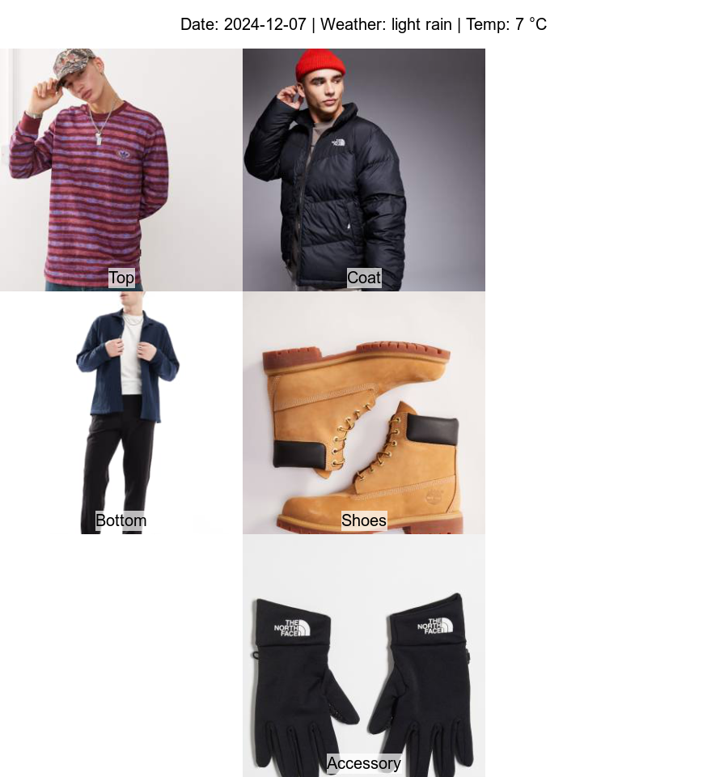

A production-style pipeline that picks an outfit each day based on the weather in London. Scrapes a product catalog, persists it to SQLite, calls the Weatherstack API, applies a rules engine, and serves the result through a Plumber API — all orchestrated by a single bash script.

A small but complete recommender system, built as the final project for an analytics engineering course. The brief was deliberately broad — solve a real problem, end to end, with no hidden cloud-only steps. The result is a self-contained pipeline that you can clone, set an API key, and run.
The system scrapes a clothing catalog from ASOS, persists products and images into a SQLite database, fetches the current weather for London via the Weatherstack API, applies a small rules engine (temperature thresholds, rain handling, sun detection) to pick a top, bottom, shoes, coat and accessory, then renders the result as an annotated PNG.
It runs as a Plumber API with two endpoints: /ootd returns the day's recommendation as JSON and writes the plot to disk; /rawdata dumps the full catalog. A single bash script chains the entire workflow — from scrape to plot — into one command.
The interesting bits are not the rules themselves; they are the seams between R, bash, an external API, and a tiny database. This is what an end-to-end pipeline looks like when you write it from first principles in 2-3 days.
Pulls 25+ items from ASOS across shoes, bottoms, tops, coats, and accessories. Downloads product images locally and writes products_raw.csv.
Reads the raw CSV, cleans and types the data, and inserts it into a closet table inside closet.db. Idempotent — safe to re-run.
Hits the Weatherstack API with the configured key and saves the current London conditions to weather_data.rds for downstream use.
Two endpoints. Temperature thresholds (≥25°C / 15-24°C / <15°C) and condition flags (rain, sun) decide what items get selected. Output is JSON + an annotated PNG.
Bash script that runs scrape → ETL → weather fetch → API server → curl-call to /ootd. One command, full pipeline.
An annotated image of the chosen outfit, captioned with the date, current weather, and temperature. The visible deliverable.
A deliberately simple rules engine — the goal was to ship something coherent, not to over-engineer.
Hot or warm (≥25°C): light tops and bottoms, no coats. Mild (15-24°C): comfortable layers plus a light, non-waterproof coat. Cold (<15°C): warmer items and a heavier coat.
Two condition flags layer on top. Rain: prefer waterproof or rain-specific coats; exclude sunglasses. Sun: include sunglasses if the catalog has any.
The recommend function lives in ootd_api.R and is the easiest place to extend — add new categories, swap thresholds, or hook in an ML ranker without touching the surrounding pipeline.
curl, SQLite, and ImageMagick on the host.rvest · httr · jsonlite · DBI · RSQLite · plumber · magick · dplyr · magrittrcloset table, one weather_data.rds blob. No server.localhost:8000 with /ootd and /rawdata endpoints.magick; JSON returned to the client.# 1. Set your Weatherstack API key export YOUR_ACCESS_KEY=<your_weatherstack_key> # 2. Run the full pipeline (scrape → ETL → weather → API → plot) ./run_pipeline.sh $YOUR_ACCESS_KEY # 3. Open the result open ootd_plot.png
curl, SQLite, and ImageMagick. The full instructions live in README.md.